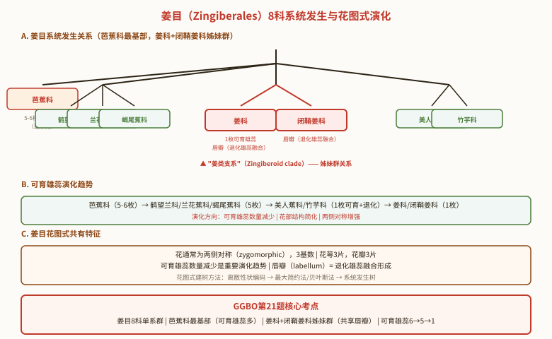

📋 目录
从水生到陆生的过渡类群——配子体占优势的高等植物
苔藓植物是最简单的高等植物,也是从水生向陆生过渡的代表类群。核心特征:
- 配子体占优势:绿色光合自养的营养体(茎叶体或叶状体)就是配子体(n),孢子体寄生其上
- 无维管组织:无真正的根(只有假根),无木质部/韧皮部分化,靠渗透吸水
- 受精离不开水:精子具2条等长顶生尾鞭型鞭毛,需借水游至颈卵器
- 有胚:受精卵在颈卵器内发育成胚 → 属于有胚植物(高等植物)
分为藓纲和苔纲两大类。

1.1 藓纲——以葫芦藓(Funaria)为代表
葫芦藓:藓纲、葫芦藓科、葫芦藓属,小型土生藓类。
配子体(n)结构:
- 形态:茎叶体,高约 1 cm,直立丛生;有假根、茎、叶的分化
- 茎:有表皮、皮层、中轴三部分分化(中轴起支持作用,但无维管束)
- 叶:卵形或舌形,1 条中肋(无叶脉),螺旋排列
- 发育:孢子 → 原丝体(绿色分枝丝状体) → 产生芽 → 多个配子体
有性生殖:
- 雌雄同株:精子器和颈卵器生于同一配子体的不同分枝顶端
- 雄枝:顶端有多个橘红色棒状精子器,产生双鞭毛游动精子
- 雌枝:顶端有 1 至几个颈卵器,各含 1 个卵
- 受精:精子借水游至颈卵器,与卵结合 → 受精卵(2n)
孢子体(2n)结构——寄生于配子体上:
- 基足:埋入配子体顶端组织,吸收营养
- 蒴柄:伸长后顶破颈卵器;颈卵器残片形成蒴帽
- 孢蒴(孢子囊):幼嫩时绿色,成熟时葫芦状(棕至红褐色)
- 孢蒴结构:蒴齿(孢子散发)、环带、蒴轴、气室、气孔、孢原组织
生活史特点(图 8-3-5):
- 异形世代交替:配子体发达(独立生活)、孢子体退化(寄生)
- 配子体世代(有性世代,n):孢子 → 原丝体 → 配子体 → 精子器/颈卵器 → 精子/卵
- 孢子体世代(无性世代,2n):受精卵 → 胚 → 孢子体(基足+蒴柄+孢蒴) → 孢子母细胞 → 减数分裂 → 孢子(n)
- 减数分裂位置:孢原组织 → 减数分裂 → 孢子(在孢蒴内进行)
1.2 苔纲——以地钱(Marchantia)为代表
地钱:苔纲、地钱科、地钱属,典型的叶状体苔类。
配子体(n)结构:
- 形态:扁平叶状体,二叉分枝,绿色,有背腹之分(与藓纲的茎叶体不同)
- 背面:有气孔、气室,行光合作用(同化组织)
- 腹面:有单细胞假根和鳞片(吸收和保护)
- 营养繁殖:背面有胞芽杯(gemma cup),内含胞芽,脱落可长成新配子体
孢子体(2n)结构——寄生:
- 由孢蒴(孢子囊)+ 蒴柄 + 基足三部分组成
- 无蒴盖、蒴齿、环带(与藓纲区别!)
- 有弹丝(帮助孢子散发);孢蒴不规则纵裂
其他苔纲种类:叶苔、大羽苔、中华光萼苔等。
1.3 苔藓植物的经济与生态价值
- 吸水保水:吸水量可达干重的 10–20 倍,保持水土
- 园艺应用:花卉运输保水材料、苗木栽培基质(如泥炭藓)
- 环境指示:对大气污染(尤其 SO₂)敏感,可作监测植物
1.4 苔藓植物的起源和演化
| 学说 | 核心主张 | 主要依据 |
|---|---|---|
| 1. 绿藻起源说 | 苔藓由绿藻演化而来 | ① 叶绿素 a、b 相同;② 光合产物均为淀粉;③ 孢子萌发先形成原丝体(类似丝状绿藻);④ 游动精子具2条等长顶生尾鞭型鞭毛;⑤ 有明显世代交替;⑥ 合子萌发不离开母体 |
| 2. 裸蕨退化说 | 苔藓由裸蕨类退化而来 | 裸蕨类孢子体占优势 → 孢子体退化 + 配子体复杂化 → 形成苔藓 |
📌 关键证据:角苔属(Anthoceros)无真正根和叶,茎上有假根 —— 被认为是苔藓与裸蕨的过渡类型。
📌 演化地位:苔藓是高等植物中配子体占优势的特殊类群。与蕨类(孢子体占优势)对比,是理解陆地植物演化的关键。
最早的维管植物——孢子体占优势、受精仍需水
蕨类植物是最早的维管植物(无种子),介于苔藓和种子植物之间。核心特征:
- 孢子体发达:有根、茎、叶分化,有维管组织(木质部+韧皮部),但无次生结构
- 配子体微小但可独立生活:心形原叶体,绿色自养(与苔藓一样独立,与种子植物不同)
- 受精仍需水:精子具鞭毛(多条),需游至颈卵器
- 不形成种子:靠孢子繁殖,孢子囊聚集成囊群
2.1 维管组织与中柱类型
中柱(stele):维管植物茎初生结构中的复合组织,由中柱鞘、维管系统、髓等组成。蕨类植物中柱类型多样,是分类和演化的重要依据(图 8-4-2):
| 中柱类型 | 结构特点 | 代表 | 演化地位 |
|---|---|---|---|
| 原生中柱 | 木质部居中,韧皮部围外,无髓 | 单中柱/星状中柱/编织中柱 | 最原始 |
| 管状中柱 | 木质部呈管状,中央有髓 | 双韧管状/外韧管状/网状 | 较进化 |
| 多环网状中柱 | 多环同心维管柱 | 蕨(真蕨) | 进化 |
| 具节中柱 | 节间中空,节部实心 | 木贼(楔叶亚门) | 特化 |
| 真中柱 | 维管束排列成环,有形成层 | 裸子/被子植物 | 最进化 |
| 散生中柱 | 维管束散生于基本组织中 | 单子叶植物 | 最进化 |
2.2 孢子囊与孢子
孢子囊形态和着生方式是蕨类分类的重要依据(图 8-4-3):
- 松叶蕨属:3 个孢子囊形成聚囊
- 石松属:孢子叶聚集成孢子叶球,孢子囊单生孢子叶近轴面基部
- 木贼属:孢囊柄聚集成孢子叶球,孢子囊长筒形,生于六角形盘状体下面
- 水龙骨属:无囊群盖
- 鳞毛蕨属:具囊群盖
- 铁线蕨属:具假囊群盖(叶缘反卷形成)
真蕨孢子囊结构(图 8-4-8):囊壁有环带(annulus)(一列内壁加厚细胞)+ 薄壁细胞 + 唇细胞。环带失水收缩 → 孢子囊开裂 → 孢子散发。
同型 vs 异型孢子:
- 同型孢子(homospory):石松属、真蕨 → 孢子大小相同(原始)
- 异型孢子(heterospory):卷柏属、水韭、蕨类少数 → 大孢子(♀)+ 小孢子(♂)(进化,向种子植物过渡)
2.3 蕨类植物 5 亚门分类(秦仁昌 1978 系统)
| 亚门 | 孢子体 | 叶 | 孢子囊 | 孢子 | 代表 |
|---|---|---|---|---|---|
| 松叶蕨亚门 | 无真根,根状茎+气生茎 | 小型叶,鳞片状 | 2–3 个聚囊 | 同型 | 松叶蕨(我国1种) |
| 石松亚门 | 有真根,直立或匍匐 | 小型叶,4行排列 | 孢子叶球 | 同型/异型 | 石松属、卷柏属 |
| 水韭亚门 | 茎块茎状(球茎) | 条形,基部扩大 | 生于叶基凹处 | 异型 | 水韭属 |
| 楔叶亚门 | 有节和节间,节间中空 | 小型叶,鳞片状轮生 | 孢子叶球,六角形孢囊柄 | 同型,有弹丝 | 问荆、木贼、节节草 |
| 真蕨亚门 | 有根状茎(除树蕨外无气生茎) | 大型叶,幼叶拳卷 | 囊群(孢子囊聚集成群) | 同型 | 蕨、鳞毛蕨、铁线蕨 |
2.4 代表种类
(1) 石松属(Lycopodium)——石松亚门
- 孢子体:小型,直立或匍匐,茎二叉分枝;叶鳞片状,螺旋排列
- 孢子叶球(strobilus):孢子叶集生成穗状,孢子囊生于叶腋
- 同型孢子;配子体微小,与真菌共生(地下发育)
- 精子:具 2 条鞭毛
(2) 卷柏属(Selaginella)——石松亚门
- 孢子体:匍匐,有根托(rhizophore)(无根冠的结构,介于根茎之间)
- 异型孢子:大孢子(♀)+ 小孢子(♂) → 向种子植物过渡!
- 代表:卷柏(九死还魂草,干旱时卷缩,遇水复苏)
(3) 问荆(Equisetum)——楔叶亚门
- 茎:具明显节和节间,节间中空,节部实心;具节中柱
- 叶:小型叶,鳞片状,轮生
- 生殖:形成孢子叶球;孢子具弹丝(湿度敏感运动,助散发)
- 有生殖茎和营养茎之分(图 8-4-6):生殖茎顶端有孢子叶球,营养茎轮状分枝
(4) 蕨(Pteridium)——真蕨亚门
真蕨亚门是蕨类中进化水平最高、种类最多(1000 余种)的类群。
孢子体(2n)(图 8-4-7):
- 多年生草本,高 1 m 左右;根状茎横走(无气生茎,除树蕨外)
- 大型叶(蕨叶):羽状复叶,具各式脉序,幼叶拳卷(circinate vernation,真蕨标志)
- 中柱:多环网状中柱(两层同心维管柱)
- 维管束:周韧维管束(韧皮部包围木质部),外始式
- 囊群(sorus):孢子囊聚集成群,生于叶背面或边缘;有/无囊群盖、假囊群盖
配子体(n)(图 8-4-9):
- 原叶体:心形,绿色光合自养,0.5–1.0 cm,可独立生活
- 腹面有假根;有精子器(球状,产生多鞭毛精子)和颈卵器(瓶状)
- 受精需水:精子游至颈卵器 → 受精卵(2n) → 胚 → 幼孢子体(从配子体长出)
2.5 蕨的生活史与经济价值
生活史(图 8-4-10):异形世代交替,孢子体占优势,配子体微小但可独立生活。
孢子(n) → 原叶体(配子体,n) → 精子器/颈卵器 → 受精(需水) → 受精卵(2n) → 胚 → 孢子体(2n) → 孢子囊 → 减数分裂 → 孢子(n)
经济价值:
- 药用:100 余种(石松、金毛狗、肾蕨、贯众等)
- 食用:蕨、紫萁幼叶(蕨菜);根状茎含淀粉
- 指示植物:
- 土壤:铁线蕨/凤尾蕨(钙性)、芒萁(酸性)
- 气候:桫椤(热带亚热带)、巢蕨(高湿)
- 矿物:木贼科某些种(金矿指示)
种子裸露、有花粉管——颈卵器植物的进化顶峰
裸子植物介于蕨类和被子植物之间,是颈卵器植物中最高级的类群,也是最早的种子植物。
3.1 五大主要特征(奥赛核心)
| 特征 | 内容 | 与蕨类/被子植物对比 |
|---|---|---|
| 1. 孢子体发达 | 木本,单轴分枝,高大乔木;有形成层和次生生长;木质部有管胞(无导管),韧皮部有筛胞(无伴胞);叶针形/条形/鳞形,角质层厚,气孔下陷 | 比蕨类更适应陆生;无导管(比被子原始) |
| 2. 胚珠裸露 | 胚珠(珠心+珠被)不被子房包被 → 发育成种子(胚+胚乳+种皮);胚乳来自雌配子体(n);种皮来自珠被 | "裸子"名称来源;胚乳为 n(被子为 3n) |
| 3. 形成球花 | 孢子叶球=球花;小孢子叶(雄蕊)聚生成小孢子叶球(雄球花);大孢子叶变态为珠鳞/珠领/珠托/套被 → 大孢子叶球(雌球花/球果) | 有孢子叶球,但无真正的花 |
| 4. 配子体退化寄生 | 雄配子体(花粉):4 细胞(2 原叶细胞+生殖细胞+管细胞);雌配子体:有颈卵器(简化),埋藏于胚珠中,产生 2–4 个颈卵器 | 比蕨类配子体退化;仍有颈卵器(被子无) |
| 5. 形成花粉管 | 花粉管将精子送入颈卵器 → 受精摆脱水的限制 | 蕨类受精需水;裸子起不需水(重大飞跃) |
📌 奥赛高频易错点:
- 胚乳为单倍体(n)——来自雌配子体,区别于被子植物的三倍体胚乳(3n)(双受精产物)
- 颈卵器是裸子植物保留的原始特征(与蕨类共有,被子植物无)
- 花粉管的出现是植物进化史重大飞跃 → 受精不受水限制
- 无双受精:1 个精子与卵结合,另 1 个精子退化(苏铁、银杏精子具鞭毛但已不需水)
3.2 松属(Pinus)的生活史——3 年周期
松属生活史是裸子植物的典型代表,从传粉到种子成熟需跨 3 个年头(图 8-5-5)。
第一年秋:
- 小孢子叶球(雄球花):小孢子母细胞(2n) → 减数分裂 → 小孢子(n)
- 小孢子有丝分裂 → 4 细胞雄配子体(2 原叶细胞 + 生殖细胞 + 管细胞),有气囊(风媒)
第二年春:
- 大孢子叶球(雌球花):珠鳞上胚珠中大孢子母细胞(2n) → 减数分裂 → 4 大孢子,仅 1 个功能大孢子(n)存活
- 大孢子 → 多次核分裂(游离核时期,16–32 核)→ 细胞化 → 雌配子体(n),近珠孔端形成 2–7 个颈卵器
- 传粉:花粉借风力传至珠孔,花粉管开始生长(但很慢,穿过珠心组织)
- 生殖细胞分裂 → 2 个精细胞(无柄精子)
第二年夏(传粉后约 13 个月):
- 受精:花粉管到达颈卵器,1 个精子与卵结合 → 受精卵(2n);另 1 精子退化
第二年秋–第三年:
- 胚胎发育(4 阶段):① 原胚阶段 → ② 胚胎选择阶段 → ③ 胚胎组织分化 → ④ 器官形成
- 多胚现象:简单多胚(多个颈卵器各受精)+ 裂生多胚(1 个受精卵分裂成多个胚)→ 通常仅 1 个存活
- 种子成熟:种皮(珠被发育)+ 胚乳(雌配子体)+ 胚(子叶 3–18 枚);种子有翅(风播)
3.3 裸子植物分类(4 纲)
| 纲 | 茎 | 叶 | 花/球花 | 精子鞭毛 | 子叶数 | 代表 |
|---|---|---|---|---|---|---|
| 苏铁纲 | 不分枝,柱状 | 大型羽状复叶,顶生,幼叶拳卷 | 雌雄异株,大孢子叶不形成球花 | 多数 | 2 | 苏铁(铁树) |
| 银杏纲 | 分枝,有长枝短枝 | 扇形,二叉脉序,先端 2 裂 | 雌雄异株,球花单性 | 多数 | 2 | 银杏(中国特产,活化石) |
| 松杉纲 | 分枝,有树脂道 | 针形/钻形/刺形/鳞形 | 孢子叶球单性,雌雄同株或异株 | 无 | 2–18 | 松、杉、柏 |
| 买麻藤纲 | 有导管(进化!) | 针形/鳞片状 | 孢子叶球单性,颈卵器退化或无 | 无 | 2 | 买麻藤、麻黄、百岁兰 |
(1) 苏铁纲——苏铁(Cycas revoluta)
- 茎:柱状,不分枝,顶端丛生大型羽状复叶(幼叶拳卷,似蕨)
- 大孢子叶:不形成球花!单生于茎顶;上部羽状分裂,下部柄状两侧生 2–6 枚胚珠
- 小孢子叶:扁平肉质,螺旋状排列成圆锥形球花;下面有多数小孢子囊
- 种子:外种皮肉质,中种皮白色骨质,内种皮红色纸质;胚乳丰富
- 精子:具多数鞭毛(原始性状,与蕨类相似)
(2) 银杏纲——银杏(Ginkgo biloba)
- 分类:现存仅 1 目 1 科 1 属 1 种——银杏;中国特产,中生代孑遗植物(活化石)
- 枝:分长枝(营养生长)和短枝(生殖生长)
- 叶:扇形,二叉脉序(原始特征),先端 2 裂或波状缺刻
- 大孢子叶:特化为珠领(collar),顶端生 1 直生胚珠(通常仅 1 个成熟)
- 种子:核果状;外种皮肉质(臭味),中种皮骨质白色,内种皮红色纸质;胚乳肉质
- 精子:具多数鞭毛(游动精子,原始性状)
- 经济:材用、食用(种仁,多食中毒)、药用(叶提取物治心脑血管疾病)
(3) 松杉纲——松科、杉科、柏科
松杉纲是裸子植物中种类最多、经济价值最高的纲。
松科(Pinaceae):约 10 属 230 种,我国 10 属 113 种
- 叶针形或线形,螺旋状排列;球果木质
- 代表:油松、马尾松、白皮松、红松、华山松、银杉(国家一级保护)、金钱松
- 珠鳞和苞鳞分离(松科特征)
杉科(Taxodiaceae):10 属 16 种,我国 5 属 7 种
- 叶条形/钻形/披针形,螺旋状排列;珠鳞和苞鳞半合生
- 代表:水杉(活化石,国家一级保护)、水松、柳杉
柏科(Cupressaceae):约 150 种,8 属,我国 8 属 29 种
- 叶鳞形或刺形,对生或轮生;珠鳞和苞鳞完全合生
- 代表:侧柏(鳞叶,扁平)、圆柏/桧柏(兼有针叶和鳞叶)
(4) 买麻藤纲
- 进化特征:次生木质部有导管(裸子植物中唯一有导管的纲!);颈卵器极度退化或无
- 代表:买麻藤、麻黄、百岁兰(Welwitschia,纳米比亚沙漠,仅 2 片叶终生生长)
- 被认为是裸子植物中最进化的类群,可能与被子植物有较近亲缘
3.4 裸子植物的起源和演化
起源:蕨类起源说——裸子植物起源于蕨类植物(古代原始类型)。
关键过渡类群——前裸子植物(Progymnosperms):
- 出现于晚泥盆纪,繁盛于上石炭纪;已灭绝
- 兼具蕨类和裸子植物特征:有蕨类习性(无种子、无胚珠)+ 裸子植物解剖特征(具缘纹孔管胞、次生木质部)
- 是最古老的裸子植物,属于从蕨类过渡到裸子植物的类群
种子演化的重要发现:
- ① 种子出现早于花和果实
- ② 最原始的种子无完善胚
- ③ 有花粉粒,无花粉管 → 早期仍依赖水受精
化石类群:种子蕨(如皱羊齿,具种子但叶似蕨类)、拟苏铁/本内苏铁(已灭绝)、科达树(高大乔木,石炭纪成煤植物)
演化路径:蕨类 → 前裸子植物 → 种子蕨 → 现代裸子植物各纲(苏铁→银杏→松杉→买麻藤)→ 同时向被子植物演化
植物界最高级类群——有花有果、双受精、配子体极度退化
被子植物是植物界中最高级、最繁茂、分布最广的类群,约 20 万种,我国约 3 万种。
4.1 五大主要特征
| 特征 | 内容 | 演化意义 |
|---|---|---|
| 1. 具真正的花 | 典型花由花萼、花冠、雄蕊群、雌蕊群四部分组成 | 花是被子植物特有结构 |
| 2. 雌蕊与果实 | 雌蕊由心皮组成(子房+花柱+柱头);胚珠被子房包被 → 发育成果实保护种子 | "被子"名称来源 |
| 3. 双受精现象 | 1 精子+卵→胚(2n);1 精子+2 极核→胚乳(3n) | 胚乳具双亲遗传性 → 后代适应性强 |
| 4. 孢子体发达 | 生活型多样(木本/草本/水生/寄生);木质部有导管,韧皮部有筛管+伴胞 | 输导组织完善 |
| 5. 配子体退化 | 雄配子体仅 2–3 细胞;雌配子体仅 7 细胞(8 核胚囊),无颈卵器 | 配子体完全依赖孢子体 |
4.2 演化趋势与分类原则(26 项性状)
被子植物形态构造的演化规律(表 8-6-1),从原始性状→进化性状:
| 器官 | 原始性状(初生) | 进化性状(次生) |
|---|---|---|
| 茎 | 木本;直立;无导管只有管胞;环纹/螺纹导管 | 草本;缠绕;有导管;网纹/孔纹导管 |
| 叶 | 常绿;单叶全缘;互生(螺旋状) | 落叶;叶形复杂化;对生或轮生 |
| 花 | 单生;有限花序;两性花;雌雄同株;螺旋状排列;各部多数不定数;花被同形不分化;离生(离瓣/离生心皮);整齐花;子房上位;花粉单沟;胚珠多数;边缘/中轴胎座 | 花序;无限花序;单性花;雌雄异株;轮状排列;各部有定数(3/4/5);分化为萼片花瓣或退化;合生(合瓣/合生心皮);不整齐花;子房下位;花粉3沟/多孔;胚珠少数;侧膜胎座 |
| 果实 | 单果/聚合果;真果 | 聚花果;假果 |
| 种子 | 有胚乳;胚小直伸,子叶 2 | 无胚乳(营养贮于子叶);胚弯曲/卷曲,子叶 1 |
| 生活型 | 多年生;绿色自养 | 一年生;寄生/腐生 |
📌 分类原则:
- 花、果形态特征最重要——受环境影响小,性状稳定可靠
- 不能孤立根据一两个性状判断进化程度,需综合分析
- 分类依据:① 形态学(最常用);② 细胞学(染色体);③ 化学(次生代谢物)
4.3 克郎奎斯特分类系统(1981)
克郎奎斯特系统(1981)是经典的被子植物分类系统(图 8-6-1),将被子植物分为:
- 双子叶植物纲(木兰纲):6 亚纲 → 64 目 → 318 科 → 约 165000 种
- 木兰亚纲(最原始):木兰目、樟目、胡椒目、毛茛目、睡莲目、罂粟目等
- 金缕梅亚纲:金缕梅目、壳斗目、胡桃目、杨柳目等(柔荑花序类)
- 石竹亚纲:石竹目、蓼目、蓝雪目
- 五桠果亚纲:山茶目、锦葵目、堇菜目、杨柳目、杜鹃花目、柿树目等
- 蔷薇亚纲:蔷薇目、豆目、大戟目、伞形目、无患子目等
- 菊亚纲(最进化):龙胆目、茄目、唇形目、玄参目、菊目等
- 单子叶植物纲(百合纲):5 亚纲
- 泽泻亚纲(最原始):泽泻目、水鳖目(水生)
- 鸭跖草亚纲:鸭跖草目、莎草目(含禾本科)、香蒲目
- 槟榔亚纲:槟榔目(棕榈科)、天南星目
- 姜亚纲:姜目、凤梨目
- 百合亚纲:百合目、兰目
4.4 检索表与双子叶 vs 单子叶
检索表有两种:
- 定距检索表(退格式):相对性状编为同号码,退格编排
- 平行检索表:左边字码平头,节约篇幅
| 特征 | 双子叶植物纲(木兰纲) | 单子叶植物纲(百合纲) |
|---|---|---|
| 子叶 | 胚常具 2 片子叶(极少 1、3、4) | 胚内仅 1 片子叶(或胚不分化) |
| 根系 | 主根发达,多为直根系 | 主根不发达,常形成须根系 |
| 维管束 | 茎内环状排列,有形成层 | 茎内散生,无形成层 |
| 叶脉 | 网状脉 | 平行脉 |
| 花部基数 | 常 5 或 4 基数,极少 3 | 常 3 基数,极少 4,绝无 5 |
| 花粉萌发孔 | 常 3 个萌发孔 | 常 1 个萌发孔 |
📌 例外与交错现象(奥赛易考):
- 睡莲科、毛茛科等双子叶有 1 片子叶现象
- 毛茛科、车前科等双子叶有须根系
- 天南星科、百合科等单子叶有网状叶脉
- 樟科、木兰科等双子叶有 3 基数花
进化意义:单子叶的须根系、无形成层、平行脉为次生特征;但单萌发孔花粉保留原始特征 → 支持"单子叶起源于双子叶"。
从木兰科到菊科——花程式 / 花图式 / 胎座 / 果实 全覆盖
按克郎奎斯特系统,从最原始的木兰亚纲到最进化的菊亚纲,依次介绍 21 科。每科重点掌握:花程式、花图式、胎座类型、果实类型、科识别特征。
📌 花程式符号速查:
* = 辐射对称 ↑ = 两侧对称 K=萼片 C=花瓣 P=花被(萼瓣不分) A=雄蕊 G=雌蕊 ( )=合生 + =多轮 ∞ =多数 G 上划线=子房上位 G 下划线=子房下位 G下标(心皮数:室数:胚珠数)
| 序 | 科名 | 花程式 | 胎座 | 果实 | 关键识别特征 |
|---|---|---|---|---|---|
| 1 | 木兰科 | *P₃₊₃₊₃A∞G∞ | 边缘 | 聚合蓇葖果 | 花被3基数、多数离生心皮、螺旋排列(最原始) |
| 2 | 樟科 | *P₃₊₂₊₂A₃₊₃₊₃₊₃G₍₃₎ | 1室1胚珠 | 核果 | 3基数轮生、花药瓣裂、含挥发油 |
| 3 | 毛茛科 | *P∞A∞G∞ | 边缘 | 聚合瘦果/蓇葖果 | 草本、多数离生心皮、蜜腺叶(最原始草本) |
| 4 | 睡莲科 | *P∞A∞G∞ | 多层 | 坚果(莲蓬) | 水生、花被多数离生、花托海绵状(原始水生) |
| 5 | 桑科 | ♂*K₄C₀A₄;♀*K₄C₀G₂ | 顶生/悬垂 | 聚花果/隐头花序 | 木本有乳汁、隐头花序(无花果/榕树) |
| 6 | 壳斗科 | ♂*K(₄₋₈)A∞;♀*K∞G₍₃₎ | 中轴 | 坚果+壳斗 | 木本、坚果外有壳斗(总苞)(栎/栗/栲) |
| 7 | 石竹科 | *K₅C₅A₅₊₅G₍₅:₁₎ | 特立中央胎座 | 蒴果 | 草本、节膨大、特立中央胎座(识别关键!) |
| 8 | 蓼科 | *P₃₊₃A₃₊₃G₍₂₎ | 基生 | 瘦果 | 草本、托叶鞘(茎节处膜质鞘)、花被3基数 |
| 9 | 锦葵科 | *K₅C₅A(∞)G₍₅₎ | 中轴 | 蒴果 | 单体雄蕊(花丝合生)+ 副萼(萼下小苞片) |
| 10 | 葫芦科 | ♂*K₅C₅A₅;♀*K₅C₅G̲₍₃:₁:∞₎ | 侧膜 | 瓠果 | 草质藤本、子房下位、瓠果(黄瓜/南瓜/西瓜) |
| 11 | 杨柳科 | ♂*K₀C₀A₂₋∞;♀*K₀C₀G̲₍₂:₁:∞₎ | 侧膜 | 蒴果 | 木本、葇荑花序、无花被、雌雄异株(杨/柳) |
| 12 | 十字花科 | *K₂₊₂C₂₊₂A₂₊₄G̲₍₂:₁:∞₎ | 侧膜(假隔膜) | 角果 | 十字花冠 + 四强雄蕊(4长2短)+ 角果 |
| 13 | 蔷薇科 | *K₍₅₎C₅A∞G∞₋₁ | 边缘/中轴 | 多样(核/梨/瘦/蓇葖) | 有花托杯(托杯)、雄蕊多数、4亚科(果实各异) |
| 14 | 景天科 | *K₅C₅A₅₊₅G₅ | 边缘/基生 | 蓇葖果 | 肉质草本、叶肥厚(景天/瓦松) |
| 15 | 豆科 | ↑K₍₅₎C₅A₍₉₎₊₁G₁ | 边缘 | 荚果 | 蝶形花冠 + 二体雄蕊(9+1)+ 荚果(3亚科) |
| 16 | 芸香科 | *K₅C₅A∞G̲₍₅:₅:∞₎ | 中轴 | 柑果 | 含挥发油腺、复叶、柑果(柑橘/花椒) |
| 17 | 伞形科 | *K₅C₅A₅G̲₍₂:₂:₁₎ | 中轴 | 双悬果 | 复伞形花序 + 双悬果(分果2个)(胡萝卜/芹菜) |
| 18 | 茄科 | *K₅C₅A₅G̲₍₂:₂:∞₎ | 中轴 | 浆果/蒴果 | 花萼宿存、花外生(茄子/番茄/辣椒/马铃薯) |
| 19 | 唇形科 | ↑K₍₅₎C₍₅₎A₄G̲₍₂:₄:₁₎ | 中轴 | 4小坚果 | 茎四棱 + 对生叶 + 唇形花冠 + 二强雄蕊 + 4小坚果 |
| 20 | 木犀科 | *K₍₄₎C₍₄₎A₂G̲₍₂:₂:₂₎ | 中轴 | 核果/浆果/翅果 | 雄蕊2枚、叶对生(桂花/茉莉/丁香/女贞) |
| 21 | 菊科 | *K₀₋∞C₍₅₎A₍₅₎G̲₍₂:₁:₁₎ | 基生 | 连萼瘦果 | 头状花序 + 聚药雄蕊 + 连萼瘦果(最进化,种数第一) |
5.1 木兰科 Magnoliaceae——最原始的被子植物
花程式:* P₃₊₃₊₃ A∞ G∞(辐射对称;花被3轮各3片,萼瓣不分;雄蕊多数;心皮多数离生,子房上位)
主要特征:
- 木本;单叶互生,全缘;大型单生花
- 花被不分化为萼片和花瓣(P而非K+C),3 基数,3 轮
- 雄蕊多数,螺旋排列;心皮多数离生,螺旋排列在伸长的花托上
- 果实:聚合蓇葖果(鹅掌楸为聚合翅果)
- 种子:胚小,胚乳丰富
原始特征(奥赛高频):
- 花被萼瓣不分(P 而非 K+C)→ 原始
- 各部多数离生,螺旋排列 → 原始
- 单叶全缘互生 → 原始
- 花托伸长(柱状花托) → 原始
- 胚小,胚乳丰富 → 原始
代表:玉兰、木兰、鹅掌楸(马褂木)、含笑
5.2 樟科 Lauraceae——3基数轮生、花药瓣裂
花程式:* P₃₊₂₊₂ A₃₊₃₊₃₊₃ G₍₃₎
主要特征:
- 木本;叶互生,革质,含挥发油腺(揉搓有香气)
- 花3基数,轮生(已从木兰科的螺旋排列进化为轮生)
- 花药瓣裂(药囊以盖状瓣片开裂)——樟科独有!
- 3心皮合生,1室1胚珠,子房上位;核果
代表:樟树、肉桂、楠木、乌药
📌 与木兰科对比:樟科从螺旋→轮生、多数→定数,是进化趋势的代表
5.3 毛茛科 Ranunculaceae——最原始的草本被子植物
花程式:* P∞ A∞ G∞(花被多数不分化;雄蕊多数;心皮多数离生)
主要特征:
- 草本(双子叶中最原始的草本类群)
- 花被多数,萼瓣不分或萼瓣分化(毛茛属萼5瓣5,乌头属萼5瓣状)
- 部分有蜜腺叶(花瓣特化为蜜腺,如乌头、翠雀)
- 心皮多数离生 → 聚合瘦果或聚合蓇葖果
代表:毛茛、乌头、翠雀、铁线莲、黄连(药用)
5.4 蔷薇科 Rosaceae——4 亚科与果实多样性
花程式:* K₍₅₎ C₅ A∞ G∞₋₁(花萼5合生;花瓣5;雄蕊多数;心皮1至多数,离生或合生)
主要特征:有花托杯(托杯/hypanthium),花萼花瓣雄蕊均着生在杯状花托边缘;叶互生有托叶。
| 亚科 | 心皮 | 子房 | 果实 | 代表 |
|---|---|---|---|---|
| 1. 绣线菊亚科 | 5,离生 | 上位 | 聚合蓇葖果 | 绣线菊、珍珠梅 |
| 2. 蔷薇亚科 | 多数,离生 | 上位 | 聚合瘦果(蔷薇果/假果) | 玫瑰、月季、草莓、蛇莓 |
| 3. 苹果亚科(梨亚科) | 2–5,合生 | 下位 | 梨果(假果) | 苹果、梨、山楂、枇杷 |
| 4. 李亚科(梅亚科) | 1 | 上位 | 核果 | 桃、李、梅、杏、樱桃 |
📌 奥赛高频考点:蔷薇科 4 亚科的花程式相同,但子房位置和果实类型不同。判断依据:
- 子房上位 + 聚合果 → 绣线菊亚科或蔷薇亚科
- 子房下位 + 梨果 → 苹果亚科(假果,花托杯参与形成果肉)
- 子房上位 + 核果 → 李亚科
📌 梨果 = 假果:大部分果肉由花托杯发育而来,真正的子房只占中央一小部分
5.5 豆科 Fabaceae(Leguminosae)——3 亚科与蝶形花冠
典型花程式(蝶形花亚科):↑ K₍₅₎ C₅ A₍₉₎₊₁ G₁
蝶形花冠:5 片花瓣不等大 → 1 旗瓣(最大,上方)+ 2 翼瓣(两侧)+ 1 龙骨瓣(2 片合生,下方)
二体雄蕊:(9)+1,即 9 枚合生 + 1 枚分离
果实:荚果(沿腹缝线和背缝线开裂,与角果不同)
| 亚科 | 花冠 | 雄蕊 | 代表 |
|---|---|---|---|
| 1. 含羞草亚科 | 辐射对称,花小,头状花序 | 多数 | 含羞草、合欢 |
| 2. 苏木亚科(云实亚科) | 假蝶形(旗瓣在内侧最小) | 10,分离 | 紫荆、红花羊蹄甲(香港区花) |
| 3. 蝶形花亚科 | 蝶形花冠(旗瓣最大在上) | 二体(9)+1 | 豌豆、大豆、花生、槐 |
📌 辨析:蝶形花亚科 vs 苏木亚科 → 看旗瓣位置。蝶形花:旗瓣最大在上(外);假蝶形花:旗瓣最小在内。雄蕊:蝶形花为二体(9)+1,苏木为 10 枚分离。
5.6 十字花科 Brassicaceae(Cruciferae)——四强雄蕊与角果
花程式:* K₂₊₂ C₂₊₂ A₂₊₄ G̲₍₂:₁:∞₎
- 十字花冠:4 片花瓣呈十字形排列
- 四强雄蕊:6 枚雄蕊(4 长 + 2 短)——十字花科独有!
- 侧膜胎座:2 心皮合生形成 1 室,有假隔膜(replum)将子房分为假 2 室
- 角果:长角果(油菜/萝卜)或短角果(荠菜/独行菜);开裂后留中央隔膜
代表:油菜、萝卜、白菜、芥菜、荠菜(十字花科=蔬菜大科)
5.7 菊科 Asteraceae(Compositae)——最进化的被子植物
花程式:* K₀₋∞ C₍₅₎ A₍₅₎ G̲₍₂:₁:₁₎
- 头状花序(capitulum):多数小花密集在花托上,外围有总苞(involucre)
- 花萼常退化为冠毛(pappus,助风力传播)→ K₀₋∞
- 聚药雄蕊:5 枚雄蕊的花药合生,花丝分离 → 套在花柱外
- 子房下位,2 心皮 1 室 1 胚珠(基生胎座)
- 连萼瘦果(cypsela):瘦果 + 冠毛(萼片变态)
2 亚科:
- 筒状花亚科:头状花序中全为筒状花(如向日葵盘心花)或兼有舌状花(边缘);无乳汁
- 舌状花亚科:全为舌状花;有乳汁(如蒲公英、莴苣)
代表:向日葵、菊花、蒲公英、莴苣、苍耳
5.8 其他重点科速记
桑科:隐头花序(无花果/榕树,花生于肉质花托内壁)、聚花果(桑葚/无花果)、有乳汁。代表:桑、无花果、榕树、构树。
壳斗科:坚果外有壳斗(cupule,由总苞木质化形成);柔荑花序;代表:栎(橡树)、栗(板栗)、栲。壳斗科是温带落叶阔叶林和亚热带常绿阔叶林的建群种。
石竹科:节膨大;特立中央胎座(free-central placenta,胎座从子房底部中央伸出独立柱状轴,胚珠着生其上);代表:石竹、康乃馨(香石竹)、繁缕。
蓼科:茎节膨大,托叶鞘(ocrea,膜质筒状鞘包茎节);花被3基数(与单子叶相似);代表:荞麦、何首乌、大黄、酸模。
锦葵科:单体雄蕊(monadelphous,花丝合生成筒)+ 副萼(epicalyx,萼片下方的小苞片);代表:棉花、木槿、锦葵、蜀葵。
葫芦科:草质藤本有卷须;瓠果(pepo,由下位子房与花托共同形成的假果,大型肉质);子房下位;代表:黄瓜、南瓜、西瓜、冬瓜、苦瓜。
杨柳科:葇荑花序、无花被、雌雄异株、木本;代表:毛白杨、垂柳。柔荑花序类还包括壳斗科、胡桃科(核桃)。
芸香科:含挥发油腺(叶揉搓有柑橘香);多为复叶;柑果(hesperidium,外果皮革质,中果皮疏松,内果皮肉质多汁);子房下位;代表:柑橘(橙/柚/柠檬)、花椒。
伞形科:草本;复伞形花序(compound umbel);茎中空;双悬果(schizocarp,成熟时2心皮分离悬挂于心皮柄上);代表:胡萝卜、芹菜、香菜、当归、柴胡(药用大科)。
茄科:花萼宿存(果期仍在);花冠常辐状;花外生(雄蕊生于花冠筒上);浆果或蒴果;代表:茄子、番茄、辣椒、马铃薯、烟草、枸杞、曼陀罗。
唇形科:草本;茎四棱 + 对生叶 + 唇形花冠 + 二强雄蕊 + 4小坚果。花程式 ↑K₍₅₎C₍₅₎A₄G̲₍₂:₄:₁₎。代表:薄荷、紫苏、丹参、益母草、黄芩(药用大科)。
木犀科:木本;叶对生;雄蕊2枚(花程式 *K₍₄₎C₍₄₎A₂G̲₍₂:₂:₂₎);代表:桂花、茉莉、丁香、女贞、连翘。
百合 / 禾本 / 棕榈 / 天南星 / 兰科——从原始到特化
单子叶植物中,以泽泻亚纲最原始(水生,花部3基数离生),兰科最进化(花高度特化,适应虫媒)。选 5 个重点科详细介绍。
| 序 | 科名 | 花程式 | 胎座 | 果实 | 关键识别特征 |
|---|---|---|---|---|---|
| 1 | 百合科 | *P₃₊₃A₃₊₃G̲₍₃:₃:∞₎ | 中轴 | 蒴果/浆果 | 花被6(2轮×3)、子房上位、3心皮合生 |
| 2 | 禾本科 | P₂₊₂A₃G₍₂:₁:₁₎ | 基生 | 颖果 | 秆(中空有节)+ 小穗 + 颖果(水稻/小麦/玉米/竹) |
| 3 | 棕榈科 | *K₃C₃A₃₊₃G₍₃:₃:₁₎ | 中轴 | 核果/浆果 | 乔木不分枝、叶大型羽状或掌状、佛焰苞花序 |
| 4 | 天南星科 | ♂P₀A₆₋₁;♀P₀G₍₃₎ | 中轴 | 浆果 | 肉穗花序 + 佛焰苞(芋/马蹄莲/半夏) |
| 5 | 兰科 | ↑P₃₊₃A₁₋₂G̲₍₃₎ | 侧膜 | 蒴果 | 合蕊柱 + 唇瓣 + 子房下位 + 花粉块(最进化单子叶) |
6.1 百合科 Liliaceae——单子叶模式科
花程式:* P₃₊₃ A₃₊₃ G̲₍₃:₃:∞₎
- 花被6(2轮各3),萼瓣不分(P),辐射对称
- 雄蕊6(2轮各3);3心皮合生,3室,子房上位
- 中轴胎座;蒴果或浆果
- 多为草本,常具鳞茎、球茎或根状茎
代表:百合、郁金香、萱草(黄花菜)、葱、蒜、芦荟、铃兰
📌 百合科是单子叶植物的模式科,其花部3基数、花被2轮各3、雄蕊2轮各3的特征,代表了单子叶植物的典型花式。
6.2 禾本科 Poaceae(Gramineae)——最重要的经济植物科
花程式:P₂₊₂ A₃ G₍₂:₁:₁₎(花被退化成浆片2+2;雄蕊3;2心皮1室1胚珠)
主要特征:
- 秆(culm):圆柱形,中空,有明显的节和节间(节间中空是禾本科独有!)
- 叶:条形,平行脉;叶鞘开口(不闭合);有叶舌和叶耳
- 花序:由小穗(spikelet)组成;小穗 = 小穗轴 + 2 颖片(护颖)+ 1 至多数小花
- 小花 = 外稃(lemma)+ 内稃(palea)+ 浆片(lodicule,花被退化)+ 雄蕊 + 雌蕊
- 颖果(caryopsis):果皮与种皮愈合不可分(禾本科独有!)
2 亚科:
- 竹亚科:木本,秆木质化;叶有短柄;代表:毛竹、慈竹
- 禾亚科:草本;叶无短柄;代表:水稻、小麦、玉米、高粱、甘蔗
📌 禾本科是人类粮食作物的主要来源(水稻、小麦、玉米、高粱、粟、大麦),也是畜牧业饲草和经济作物(甘蔗、竹)的来源。
6.3 棕榈科 Arecaceae(Palmae)——单子叶中的乔木
花程式:* K₃ C₃ A₃₊₃ G₍₃:₃:₁₎
- 乔木或灌木,茎不分枝(单子叶植物中唯一的高大乔木类型!)
- 叶大型,掌状分裂(棕榈/蒲葵)或羽状复叶(椰子/槟榔),丛生茎顶
- 花序为佛焰苞(spathe)包被的肉穗花序;花3基数
- 子房上位;核果或浆果
代表:棕榈、椰子、槟榔、蒲葵、油棕、枣椰(伊拉克蜜枣)
📌 棕榈科的"乔木不分枝"是单子叶植物中的特例——因维管束散生、无形成层,不能次生增粗,靠初生增粗生长使茎变粗。
6.4 天南星科 Araceae——佛焰苞与肉穗花序
花程式:♂ P₀ A₆₋₁ ; ♀ P₀ G₍₃₎(花单性,无花被)
- 肉穗花序(spadix):多数小花密集在肉质花序轴上
- 佛焰苞(spathe):1 片大型苞片包被肉穗花序(常彩色,如马蹄莲)
- 花单性,无花被;雌花在下部,雄花在上部(同株)或雌雄异株
- 子房上位;浆果
代表:芋、魔芋、马蹄莲、半夏、天南星(多药用,多有毒)
6.5 兰科 Orchidaceae——最进化的单子叶植物
花程式:↑ P₃₊₃ A₁₋₂ G̲₍₃₎
主要特征:
- 花两侧对称(↑);花被6(2轮各3),内轮中央1片特化为唇瓣(labellum)
- 合蕊柱(gynostemium):雄蕊与花柱合生 → 1 枚雄蕊(或 2 枚);花药位于合蕊柱顶端
- 蕊喙(rostellum):柱头与花药间的舌状突起,将花粉块分隔
- 花粉块(pollinia):花粉粘合成块状,适应昆虫传粉
- 子房下位,3心皮1室,侧膜胎座;蒴果
- 种子极小极多,无胚乳,需与真菌共生萌发(菌根)
- 子房扭转180°:发育过程中子房扭转,使唇瓣位于下方(便于昆虫着陆)
代表:春兰、蝴蝶兰、石斛、天麻(药用)、白芨
姜目植物花图式的系统发生分析（GGBO第21题竞赛前沿）
姜目（Zingiberales）概况：
- 姜目是被子植物单子叶植物纲下的一个大目，包含8个科：芭蕉科（Musaceae）、鹤望兰科（Strelitziaceae）、兰花蕉科（Lowiaceae）、蝎尾蕉科（Heliconiaceae）、美人蕉科（Cannaceae）、竹芋科（Marantaceae）、闭鞘姜科（Costaceae）和姜科（Zingiberaceae）。
- 系统发生关系：姜目是一个单系群，芭蕉科是最早分化的基部类群。姜科的姊妹群是闭鞘姜科，两者属于姜目中的"姜类支系（Zingiberoid clade）"。
花图式（Floral Diagram）的系统发生分析：
- 花图式是花结构的图解表示，从花顶部向下看，用同心圆表示花部器官的排列：最外层为花萼（sepals），第二层为花瓣（petals），第三层为雄蕊群（androecium），中央为雌蕊群（gynoecium）。
- 姜目花图式的关键特征：①花通常为两侧对称（zygomorphic），具3基数；②可育雄蕊数量减少是重要的演化趋势——芭蕉科通常5-6枚可育雄蕊，姜科仅1枚可育雄蕊（其余退化为花瓣状的退化雄蕊）；③唇瓣（labellum）是姜科和闭鞘姜科的特征结构，由退化雄蕊融合形成。
- 花图式建树方法：将花图式各特征编码为离散性状（如可育雄蕊数、退化雄蕊数量、花被片融合程度、子房位置等），用最大简约法（Maximum Parsimony）或贝叶斯法构建系统发生树。
GGBO考点总结：
- ①姜目单系性→支持其作为一个自然分类群；②芭蕉科最基部→花图式特征最原始（可育雄蕊多）；③姜科+闭鞘姜科为姊妹群→共享唇瓣特征；④可育雄蕊减少→从6→5→1的演化趋势反映了姜目花部结构的简化。

苔藓植物的极端环境适应性（GGBO第26题：沙漠苔藓火星定植）
沙漠苔藓（Syntrichia caninervis）的极端环境适应性：
- Syntrichia caninervis（齿肋赤藓）是一种广泛分布于全球干旱和半干旱地区的苔藓植物，具有极强的耐旱性（desiccation tolerance），被称为"复活植物（resurrection plant）"。
- 耐旱机制：①脱水时细胞进入玻璃化状态（vitrification）——细胞质转化为高粘度的玻璃态，防止蛋白质变性和膜损伤；②积累大量可溶性糖（如海藻糖、蔗糖）和LEA蛋白（晚期胚胎发生丰富蛋白）——保护生物大分子和膜结构；③复水后快速恢复——在重新获得水分后几分钟到几小时内恢复光合作用和代谢活性。
- 极端耐受性：S. caninervis可以耐受：①极端低温（-196℃液氮处理）；②高剂量γ辐射（>5000 Gy）；③模拟火星环境（低气压、高CO₂、高UV辐射）下存活。
火星定植研究的科学意义：
- GGBO第26题涉及科学家将S. caninervis置于模拟火星环境中的实验。结果发现该苔藓在模拟火星条件下仍能存活并恢复生长，使其成为火星生态改造（terraforming）的候选物种。
- 作为先锋物种：苔藓植物是陆地生态系统的先锋植物，在火星定植中可能扮演类似角色——通过光合作用产生氧气、固定碳、改善土壤结构，为后续更复杂的生物引入创造条件。
- 基因资源：S. caninervis的耐旱基因可能通过基因工程转入作物，提高作物的抗旱性。
必背考点汇总
演化核心线索:从水生到陆生,从配子体优势到孢子体优势,从无维管到有维管,从孢子繁殖到种子繁殖,从裸露种子到果实包裹种子,从受精需水到受精不需水。
| 门类 | 维管 | 世代交替 | 繁殖 | 受精 | 胚乳倍性 | 颈卵器 | 花粉管 | 花/果实 |
|---|---|---|---|---|---|---|---|---|
| 苔藓 | 无 | 配子体优势 | 孢子 | 需水 | — | 有 | 无 | 无/无 |
| 蕨类 | 有(无次生) | 孢子体优势 | 孢子 | 需水 | — | 有 | 无 | 无/无 |
| 裸子 | 有(有次生) | 孢子体优势 | 种子 | 不需水 | n(单倍体) | 有 | 有 | 球花/无果实 |
| 被子 | 有(有次生) | 孢子体优势 | 种子+果实 | 不需水 | 3n(三倍体) | 无 | 有 | 有花/有果实 |
奥赛记忆要点(6 条主线):
- 维管:苔藓无 → 蕨类有(无次生) → 裸子/被子有(有次生生长,有形成层)
- 受精:苔藓/蕨类需水 → 裸子/被子不需水(花粉管的出现是飞跃)
- 种子:苔藓/蕨类无种子(孢子) → 裸子有种子 → 被子有种子+果实
- 胚乳:裸子 n(雌配子体) vs 被子 3n(双受精),这是必考辨析
- 颈卵器:苔藓/蕨类/裸子有 → 被子无(配子体极度退化为8核胚囊)
- 导管:苔藓无 → 蕨类/裸子多数无(只有管胞) → 被子有(导管+筛管+伴胞);例外:买麻藤纲有导管
被子植物演化趋势(原始→进化):
木本→草本;单叶→复叶;互生→对生;单生花→花序;两性→单性;辐射→两侧;花被离生→合生;雄蕊多数→少数;子房上位→下位;胚珠多数→少数;有胚乳→无胚乳;双韧维管束→外韧维管束。
木兰科(最原始:萼瓣不分、多数离生心皮、螺旋排列) → 菊科(最进化:头状花序、聚药雄蕊、子房下位、连萼瘦果)。
📌 花程式速记口诀:
- 木兰科:*P₃₊₃₊₃A∞G∞ → "3+3+3,无限多,全离生"
- 十字花科:*K₂₊₂C₂₊₂A₂₊₄G₍₂₁∞₎ → "十字花冠四强蕊,角果侧膜假隔膜"
- 豆科蝶形花:↑K₍₅₎C₅A₍₉₎₊₁G₁ → "蝶形花冠二体蕊,荚果边缘胎座"
- 菊科:*K₀₋∞C₍₅₎A₍₅₎G₍₂₁₁₎ → "头状花序聚药蕊,冠毛瘦果子房下"
- 唇形科:↑K₍₅₎C₍₅₎A₄G₍₂₄₁₎ → "四棱对生唇形花,二强雄蕊四小果"
- 百合科:*P₃₊₃A₃₊₃G₍₃₃∞₎ → "3基数2轮花被,子房上位3心皮"
- 兰科:↑P₃₊₃A₁₋₂G₍₃₎ → "合蕊柱+唇瓣,子房下位侧膜座"